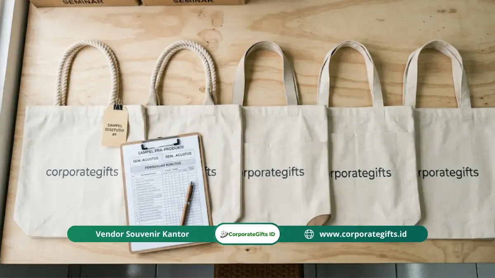

Corporate Gifts ID - Jasa goodie bag seminar adalah layanan vendor yang menangani seluruh pengadaan paket perlengkapan acara, mulai dari konsultasi item, kustomisasi desain, produksi, pengemasan, hingga pengiriman tepat waktu. Vendor terpercaya ditandai dengan portofolio yang dapat diverifikasi, sampel sebelum produksi massal, penawaran harga transparan, dan komitmen deadline secara tertulis.
Poin Kunci Memilih Jasa Goodie Bag Seminar:
- Portofolio Nyata: Vendor terpercaya memiliki rekam jejak pengadaan instansi yang jelas dan menyediakan sampel fisik nyata sebelum pesanan massal berjalan.
- Transparansi Rincian Harga: Penawaran resmi merinci biaya per item tas, sablon/grafir, finishing, kemasan, dan kargo pengiriman tanpa biaya tersembunyi.
- Disiplin Timeline: Memulai konsultasi minimal 3 minggu sebelum acara menjamin kualitas jahitan dan cetak logo tetap terjaga optimal.
- Komparasi Quotation: Selalu bandingkan penawaran dari minimal 2 hingga 3 vendor untuk memastikan rasio harga dan mutu terbaik.
- Kesiapan Brief Desain: Menyiapkan berkas logo master vektor (AI/EPS/SVG) mempermudah vendor menyusun mockup akurat tanpa risiko salah cetak.
Panduan komprehensif ini mengupas tuntas kriteria objektif dalam memilih mitra pengadaan, saluran pencarian vendor, alur kerja pemesanan, hingga struktur lembar brief yang wajib disiapkan oleh panitia acara.
Apa Itu Jasa Goodie Bag Seminar?
Jasa goodie bag seminar adalah layanan terpadu dari vendor atau produsen merchandise yang menangani keseluruhan rantai pasok pengadaan tas souvenir seminar. Dengan memanfaatkan layanan satu atap ini, panitia penyelenggara tidak perlu repot mencari dan membeli masing-masing isi goodie bag seminar secara terpisah dari puluhan supplier yang berbeda.
Menggunakan layanan pengadaan yang terintegrasi memberikan sejumlah keunggulan kompetitif bagi panitia:
- Efisiensi Waktu & Tenaga: Panitia dapat mengalokasikan fokus pada substansi materi seminar dan koordinasi narasumber tanpa terbebani urusan logistik merchandise.
- Konsistensi Standar Mutu: Kualitas cetak warna dan tema desain antar item (tas, notebook, pulpen, tumbler) selaras secara visual.
- Koordinasi Desain yang Sederhana: Komunikasi revisi tata letak dilakukan melalui satu pintu customer service.
- Tanggung Jawab Tunggal: Apabila terjadi cacat produksi atau barang rusak di jalan, vendor memikul garansi penggantian secara penuh.
Cakupan layanan yang umumnya disediakan oleh penyedia jasa seminar kit profesional:
- Konsultasi item dan kurasi produk berdasarkan pagu anggaran serta profil peserta (akademisi, praktisi bisnis, atau mahasiswa).
- Kustomisasi desain, meliputi aplikasi logo institusi, warna korporat identitas merek, dan tagline acara.
- Produksi massal tas (spunbond, kanvas, blacu, atau cordura) beserta perlengkapan seminar pendukungnya.
- Pengemasan rapi (kitting and packing) seluruh isi ke dalam tas seminar siap bagi.
- Pengiriman aman langsung ke venue hotel, gedung pertemuan kampus, atau kantor panitia pelaksana.
Kriteria Vendor Jasa Goodie Bag Seminar yang Layak Dipilih
Memilih vendor cenderamata acara tidak boleh dilakukan secara terburu-buru hanya berdasarkan harga termurah. Vendor yang layak dipercaya wajib memenuhi lima kriteria fundamental berikut:
1. Portofolio Proyek yang Dapat Diverifikasi
Vendor kredibel mampu menunjukkan dokumentasi hasil kerja nyata pada event-event terdahulu. Perhatikan apakah mereka melampirkan foto produk asli hasil jepretan workshop, bukan sekadar foto mockup 3D tiruan yang diunduh dari internet. Kredibilitas semakin tinggi jika vendor pernah dipercaya oleh institusi kementerian, BUMN, atau perusahaan multinasional terkemuka.

Pengecekan sampel fisik dan kendali mutu memastikan tas seminar kit nyaman dipakai dan merepresentasikan citra acara secara prima.
2. Ketersediaan Sampel Fisik atau Mockup Digital Berkualitas
Sebelum pesanan massal disetujui untuk diproduksi, penyedia jasa harus sanggup membuat sampel fisik nyata (pre-production sample) atau mockup simulasi presisi tinggi. Dari sampel ini, panitia dapat menguji ketebalan gramasi kain tas, kerapian jahitan tali pegangan, dan ketajaman cetak tinta sablon.
3. Penawaran Harga Transparan dan Terperinci
Dokumen quotation resmi dari vendor profesional merinci komponen pembiayaan secara gamblang: harga satuan tas, biaya sablon per warna, biaya cetak notebook, biaya packaging, serta ongkos kirim ekspedisi. Waspadalah terhadap penawaran yang hanya memunculkan harga borongan gelondongan tanpa kejelasan spesifikasi bahan.
4. Kapasitas Produksi yang Terukur
Untuk seminar berskala nasional atau konferensi internasional dengan jumlah peserta melebihi 500 hingga 1.000 orang, mintalah konfirmasi kapasitas mesin cetak dan penjahit vendor per hari. Pastikan workshop vendor tidak sedang mengalami beban antrean berlebih yang berpotensi memicu keterlambatan.
5. Komitmen Tenggat Waktu Tertulis
Keterlambatan pengiriman goodie bag pada hari H acara adalah bencana fatal bagi penyelenggara. Vendor terpercaya selalu berani mencantumkan tanggal batas penyelesaian produksi dan estimasi tanggal barang tiba dalam surat perjanjian kerja sama atau faktur proforma.
Di Mana Menemukan Vendor Jasa Goodie Bag Seminar yang Tepat?
Panitia pengadaan dapat memanfaatkan beberapa kanal berikut untuk menemukan penyedia jasa tas seminar berkualitas:
- Vendor Spesialis Merchandise Korporat B2B: Seperti CorporateGifts.ID yang memiliki legalitas resmi perusahaan (CV/PT), faktur pajak, dan tim manajemen mutu khusus untuk pesanan instansi skala menengah hingga besar.
- Pencarian Google Lokal Terverifikasi: Mengetik kata kunci spesifik seperti "vendor tas seminar Surabaya" atau "jasa goodie bag seminar kantor" guna memudahkan kunjungan langsung ke lokasi kantor operasional.
- Rekomendasi Komunitas Event Organizer: Bertanya pada rekanan panitia acara atau EO yang pernah sukses menyelenggarakan simposium sebelumnya. Rekomendasi berdasarkan pengalaman langsung memiliki tingkat akurasi tinggi.
- Platform E-Commerce: Berguna untuk pengadaan mendadak dalam skala kecil di bawah 50 unit, namun kurang fleksibel untuk kebutuhan kustomisasi kompleks dan penagihan invoice termin B2B.
Alur Pemesanan Goodie Bag Seminar kepada Vendor
Agar proses pengadaan berjalan lancar tanpa friksi, terapkan alur pemesanan tujuh langkah sistematis berikut:
- Konsultasi Kebutuhan Awal: Hubungi admin vendor untuk menyampaikan tanggal acara, target peserta, dan rentang pagu anggaran per paket.
- Kompilasi & Komparasi Penawaran: Minta proposal penawaran harga dari kandidat vendor terpilih dan bandingkan nilai manfaatnya.
- Pemberian Lembar Brief & Aset Visual: Serahkan logo resmi universitas atau korporat dalam format master vektor beresolusi tinggi.
- Evaluasi & Approval Sampel: Teliti lembar proofing digital atau sampel fisik sebelum menandatangani persetujuan produksi massal.
- Penerbitan Administrasi & Uang Muka: Penerbitan Purchase Order (PO) resmi serta pembayaran uang muka (DP) umumnya sebesar 50%.
- Pemantauan Progres Workshop: Minta dokumentasi foto proses penjahitan dan sablon saat pengerjaan mencapai tahap 50%.
- Pengecekan Akhir & Distribusi: Periksa kesesuaian jumlah dan kualitas barang saat tiba di lokasi sebelum melakukan pelunasan sisa tagihan.
Tabel Matriks Evaluasi & Kriteria Seleksi Vendor
Gunakan tabel parameter berikut sebagai instrumen audit sebelum menetapkan pilihan vendor goodie bag seminar:
| Kriteria Seleksi | Indikator Vendor Terpercaya | Risiko Vendor Tidak Kredibel | Metode Verifikasi |
|---|---|---|---|
| Dokumentasi Portofolio | Foto asli workshop, ulasan klien resmi, klien korporat jelas | Menggunakan gambar internet tanpa bukti riil pengadaan | Cek media sosial, galeri website, & sampel fisik |
| Ketersediaan Sampel | Menyediakan sampel proofing nyata sebelum produksi massal | Menolak membuat sampel atau menuntut biaya sampel berlebihan | Permintaan sampel tas & cetak logo |
| Struktur Quotation | Rincian transparan (biaya bahan, sablon, kemasan, & ongkir) | Harga borongan samar yang berpotensi memicu biaya siluman | Evaluasi lembar penawaran resmi berfaktur |
| Jaminan Waktu Serah Terima | Menyertakan klausul batas deadline tertulis dan garansi cacat | Hanya menjanjikan secara lisan tanpa komitmen legal | Surat Perjanjian Kerja / Surat Pesanan Resmi |
Apa yang Harus Dicantumkan dalam Brief kepada Vendor Goodie Bag Seminar?
Semakin komprehensif dokumen brief yang Anda ajukan ke vendor, semakin cepat penawaran harga dapat diformulasikan secara presisi. Format lembar brief yang efektif wajib memuat:
- Informasi Acara: Nama resmi kegiatan seminar, tanggal penyelenggaraan, dan alamat lengkap tempat pengiriman barang.
- Kuantitas Pesanan: Jumlah pasti paket yang dibutuhkan, ditambah 5% hingga 10% kuota cadangan untuk mengantisipasi kehadiran tamu VIP mendadak.
- Alokasi Anggaran (Budget): Pagu harga per tas (misal Rp25.000 s/d Rp75.000) agar vendor dapat menyodorkan opsi material kain yang sesuai.
- Daftar Item Pendukung: Rincian paket pelengkap seperti pulpen custom, buku agenda seminar, gantungan id card/lanyard, dan tumbler minum.
- Aset Visual Master: Berkas logo dalam format vektor (AI, EPS, SVG) beserta kode warna korporat CMYK atau Pantone resmi.
- Batas Tanggal Tiba (Delivery Deadline): Tetapkan tanggal kedatangan minimal 2 hingga 3 hari sebelum hari seminar dibuka.
Kesimpulan & Rekomendasi Pemesanan
Memilih jasa goodie bag seminar yang tepat bukan sekadar urusan mencari tas termurah, melainkan investasi strategis dalam membangun kesan profesional pertama bagi para peserta acara. Dengan mengevaluasi portofolio, memverifikasi sampel nyata, dan menetapkan kesepakatan tertulis, risiko keterlambatan dan penurunan mutu dapat dieliminasi secara tuntas.
Untuk mewujudkan paket souvenir seminar bermutu tinggi, percayakan kebutuhan pengadaan Anda pada CorporateGifts.ID. Kami menyediakan pilihan bahan tas kanvas, spunbond ramah lingkungan, blacu vintage, hingga polyester premium lengkap dengan aneka isi paket seminar kit terlaris.
Jelajahi panduan pilihan produk selengkapnya di halaman Katalog Resmi CorporateGifts.ID atau ajukan kalkulasi penawaran anggaran sekarang melalui form pengadaan resmi kami.